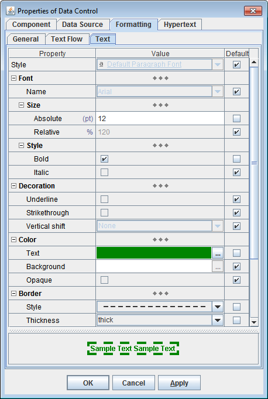
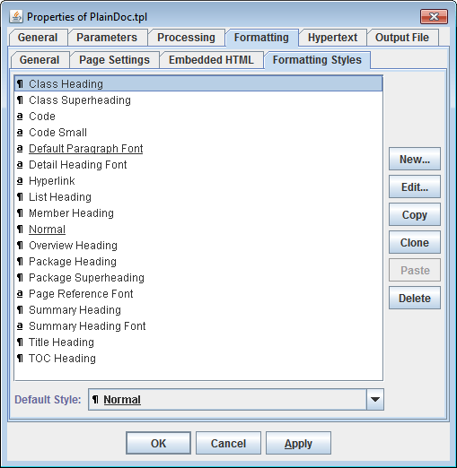
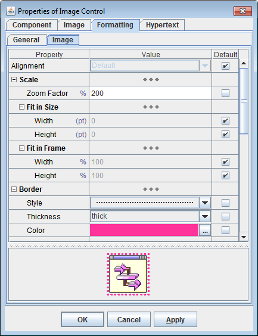

Output documents can be generated in HTML or RTF formats with the maximum support of formatting techniques provided in the both formats.At the same time, the architecture of DocFlex and its templates allows designing templates independently on a particular destination format. The necessary format is selected just when starting the generator. All instructions and settings contained in the template will be rendered with the appropriate features of the selected output format. So, once the template has been created, it can be used to produce the best quality output documents in any format supported by the latest version of DocFlex.
The current version of DocFlex SDK supports generation output in the following formats:
HTML (version 4.0)RTF (version 1.6)TXTTXT is a plain text output without any formatting features. It can be found useful in some applications as well. In the next version, it is planned to support the XSL-FO output generation.
- assigning a text font (i.e. font name and font size). In templates, a font size is specified in points. However, depending on the generator settings, the HTML documents can be generated with the fonts having either fixed or relative sizes. The relative font sizes are specified in percents and rendered by the browsers relatively to the base font size.
- font style: plain, italic, bold
- text decoration: none, underlined, strikethrough
- colors of text and background
- text border

- paragraph margins
- border
- background color
- pagination control
- defining styles in templates
- using styles within templates to specify formatting of text and paragraphs
- including styles in generated documents (RTF)

- border styles: none, solid, double, dashed, dotted
- thickness: thin, medium, thick
- border colors
- defining tables with any layout of cells
- specifying any table/row/cell borders and background colors
- support of nested tables
- numbered lists
- bulleted lists
- page number
- number of pages
- table of contents
- specifying paper size and orientation
- setting page margins
- defining page headers and footers with any content and formatting. Each document template may contain a single set of page header and footer definitions. However, using subtemplate calls, it is possible to generate documents having sections with different page header/footer sets.
For more information, see Call Template documentation.
See also examples: DocFlex/Javadoc | Examples | RTF demo and DocFlex/Together | Examples.
- specifying the arbitrary scaling of the image: zoom factor
- option to scale the image automatically to fit into the containing frame (e.g. document page or a table cell)
- borders around image

DocFlex allows to render HTML tags inserted within the text data (for instance, the HTML formatting used in Java source comments).
When such a rendering is specified, while generating of an HTML output, the HTML tags are passed as is. However, in other formats, the embedded HTML tags need to be parsed and rendered with the appropriate features supported in the given output format.
DocFlex is able to do this in the way that the output markup produced by the rendering of the embedded HTML tags is smoothly integrated with that resulted from interpreting of the formatting directly specified in template components.
This is implemented in some universal way for all possible non-HTML output formats. Almost all HTML tags practically usable in doc-comments are supported now. Here's the list of the supported tags:
Text <b>, <strong>, <i>, <em>, <code>, <tt>, <u>, <s>, <strike>, <sub>, <sup>, <font>, <br> Paragraphs <p>, <center>, <div>, <pre>, <h1>, <h2>, <h3>, <h4>, <h5>, <h6>, <blockquote> Lists <ul>, <ol>, <li>, <dl>, <dt>, <dd> Table <table>, <tr>, <td>, <th> Other <hr>, <img>, <a>...</a> See DocFlex/Javadoc | Examples | RTF demo for an example result produced by the rendering of embedded HTML.